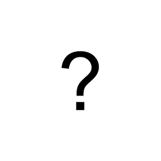

Preparar el dispositivo
Escribe tu código de recogida (el que te ha dado el profesor). Se guardará en este dispositivo para las siguientes participaciones.
- Entrega el dispositivo a la persona participante y no mires la pantalla ni ayudes mientras responde.
- Busca un sitio tranquilo. Solo mayores de edad que no estén cursando esta asignatura.
Límite alcanzado en este dispositivo
Desde este dispositivo ya se han registrado participaciones, el máximo previsto. Usa otro dispositivo o habla con el profesor.
Tarea de razonamiento con figuras
Te invitamos a participar en una actividad de la asignatura de Métodos de investigación en Psicología (ESIC University). Consiste en resolver problemas de razonamiento con figuras.
- Dura unos 8-10 minutos.
- La participación es voluntaria y puedes abandonar en cualquier momento.
- Es anónima: no se recoge tu nombre, correo ni ningún dato identificativo.
- Los datos se usan solo con fines docentes y de forma agregada.
- Al terminar te explicaremos el objetivo de la actividad.
Gracias por tu tiempo
No se ha guardado ningún dato. Devuelve el dispositivo a la persona que te lo ha pasado.
Instrucciones
Verás tres figuras: A, B y C. La figura A se transforma en la B siguiendo una o varias reglas (girar, mover el punto, quitar líneas, reflejarse…). Tu tarea es elegir la figura que resulta de aplicar las mismas reglas a la figura C.
- Toca la figura que creas correcta. Si ninguna lo es, elige «Ninguna es correcta»; si no lo sabes, «No sé».
- No hay límite de tiempo estricto, pero no te detengas demasiado en una figura.
- Primero harás 2 ejemplos de práctica con corrección.
¡Muy bien! Ahora empieza la tarea
Vas a resolver figuras. Ya no verás si aciertas o fallas. Concéntrate y responde con calma.

Para terminar
¡Gracias por participar!
¿Qué estábamos estudiando?
Esta actividad es un experimento de clase sobre motivación y razonamiento. Al azar, a la mitad de las personas se les ofrecía un café si superaban un número de aciertos, y a la otra mitad no se les decía nada. Queremos saber si el incentivo mejora el rendimiento y, sobre todo, si lo hace más en las figuras difíciles que en las fáciles.
Tus respuestas son anónimas. Código de participación: · Enviando…
Por favor, no le cuentes a nadie el objetivo hasta que termine la recogida de datos.